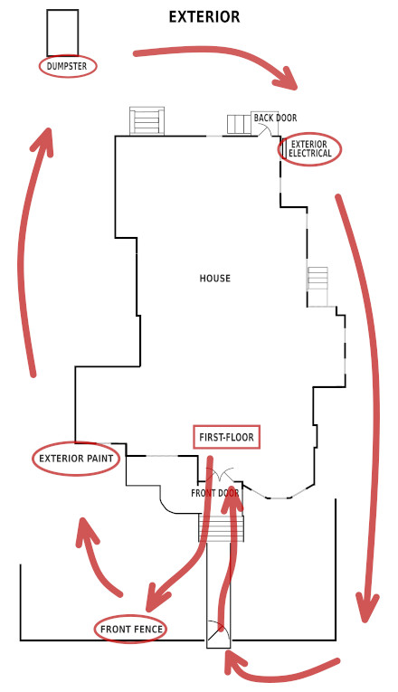

Welcome to the WES house tour!
This is a self-guided tour. You can choose 1 of 3 pre-defined routes, or you can wonder aimlessly.
Choose a route and follow the map to each tour stop. The tour has ten (10) tour stops, so plan about 30 minutes for the tour. Each stop has a web page with info, audio, and photos.
All tour routes start in the first-floor front hallway.
All routes have maps to help show you the way so you don't miss any stops. Here is what a typical map looks like.
This is an example of the kind of map you will follow along the tour route.
